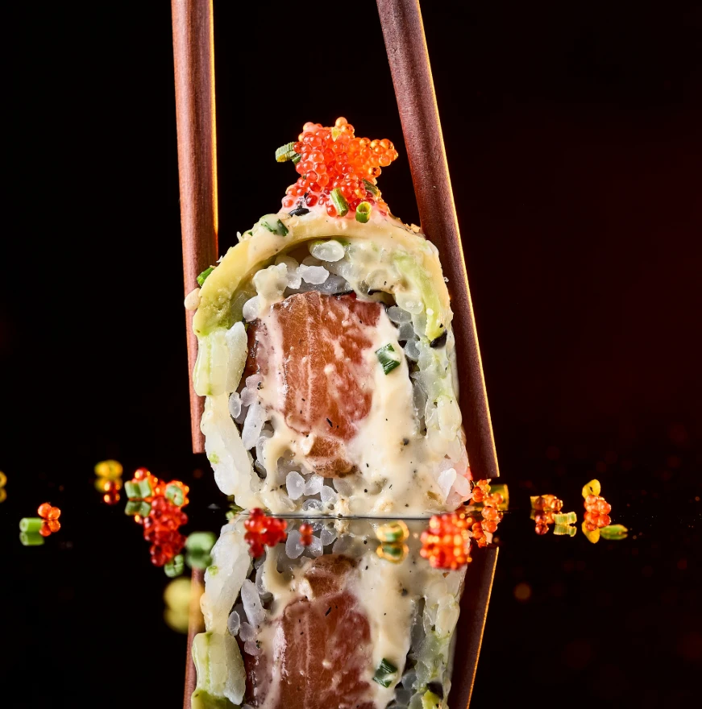
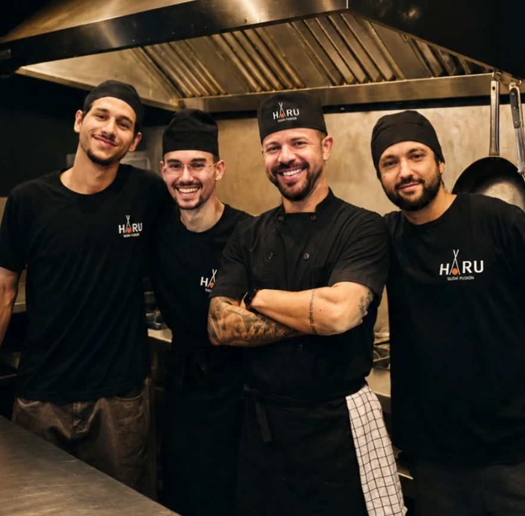
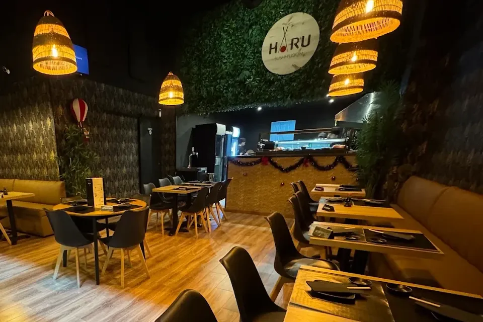
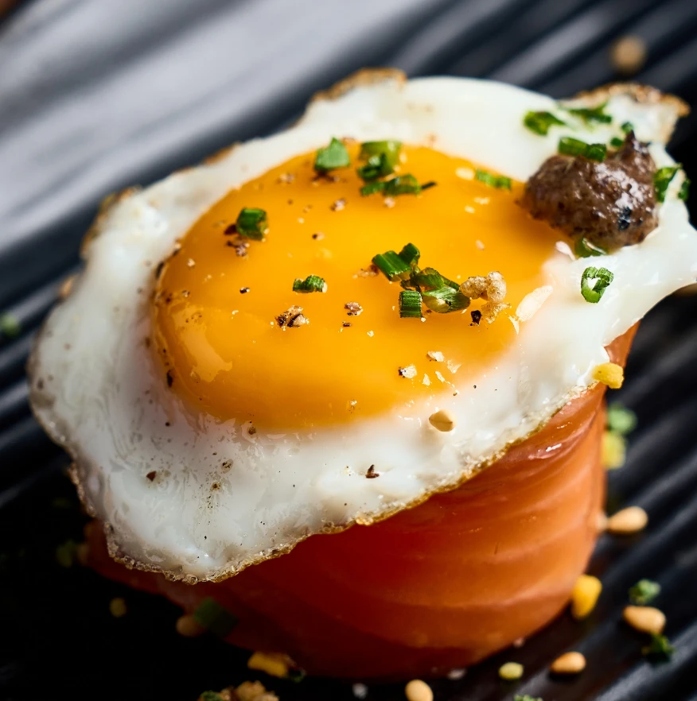
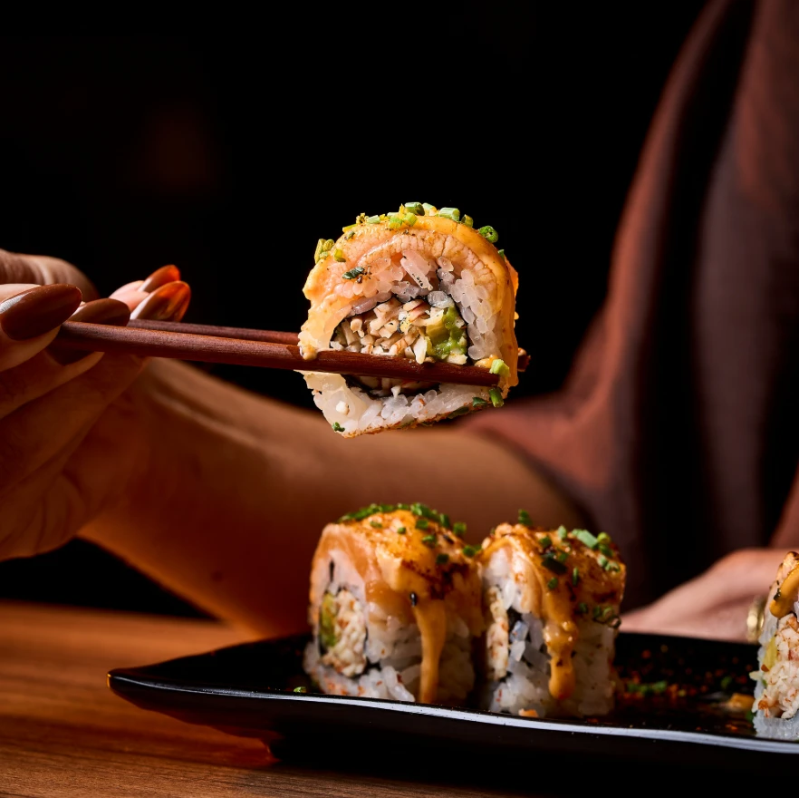
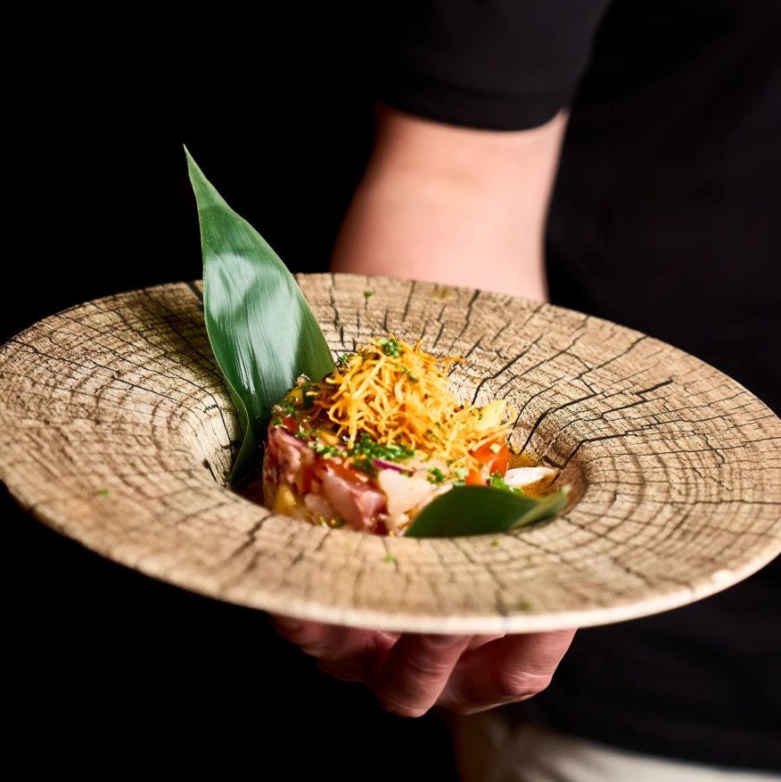
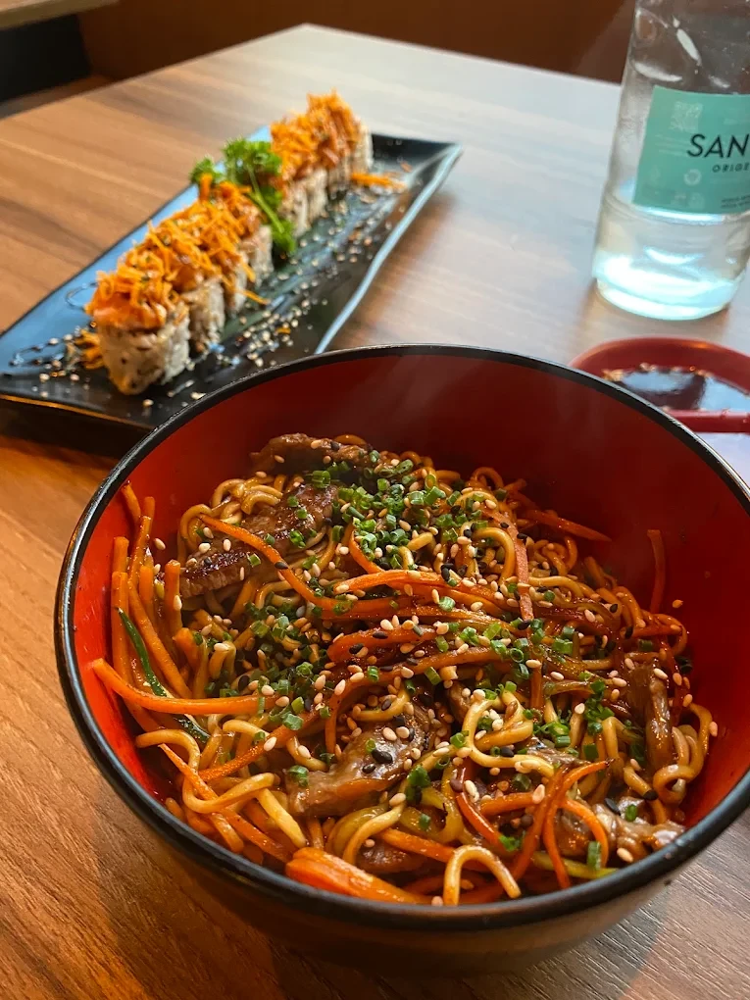
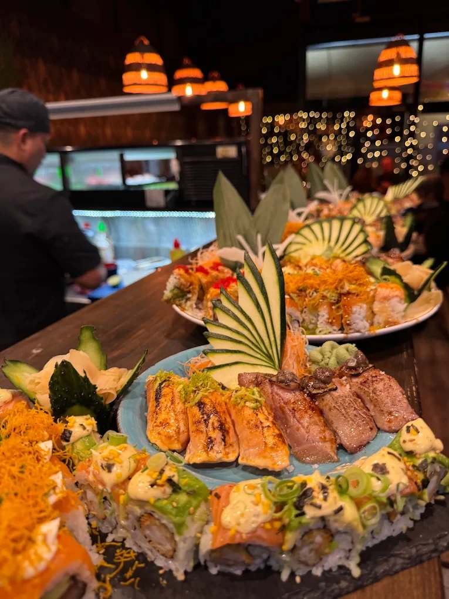
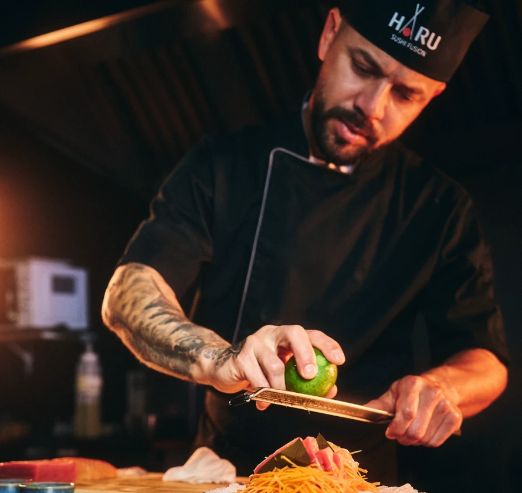
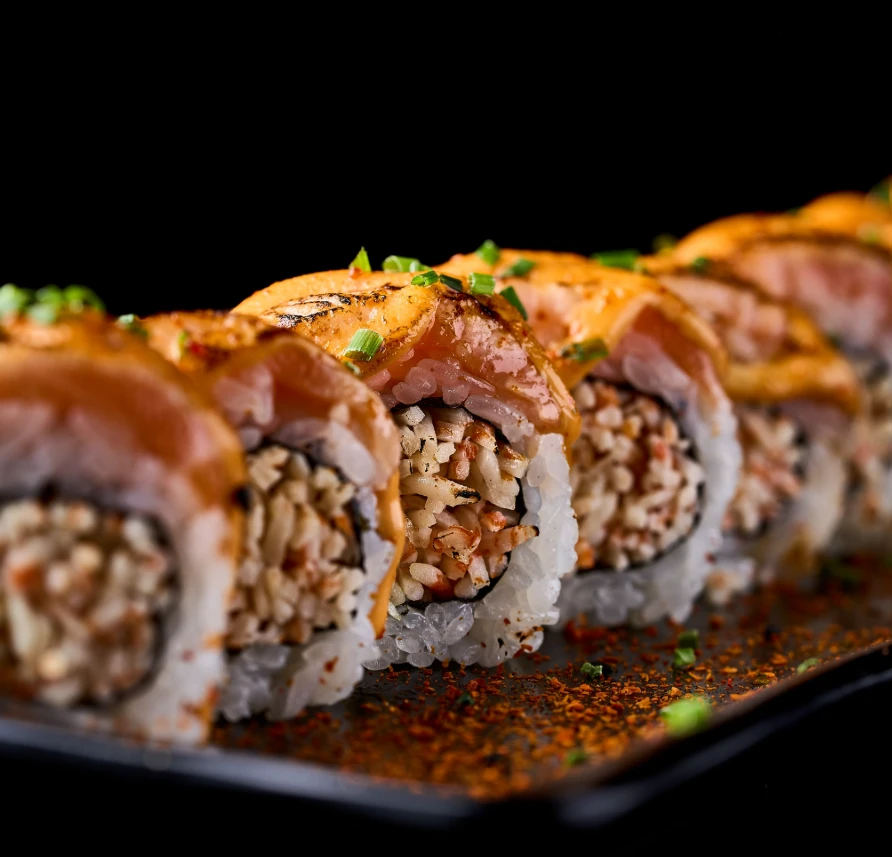

Calafell Platja
Haru Sushi Sushi de fusió japonesa i brasilera
A la sala, a la terrassa, per emportar o a domicili.


Nosaltres
El Japó i el Brasil, a quatre passes del mar
Haru Sushi és un restaurant de sushi de fusió a Calafell Platja. La base és japonesa; l'accent, brasiler.
Ens trobaràs al Passatge de Sant Antoni, amb sala i terrassa. I si prefereixes sopar a casa, pots fer la comanda per emportar o a domicili.
- Sala
- Terrassa
- Per emportar
- A domicili

La carta
Què hi trobaràs
Aquestes són les seccions de la carta. Els plats i els preus s'hi afegiran quan el restaurant ens faciliti la carta actual.
- Entrants
- Yakisoba i arrossos
- Sashimi
- Nigiri
- Hot rolls
- Hosomaki
- Uramaki
- Temaki
- Combinats
- Postres
Carta completa amb preus: properament.
Mira el catàleg a WhatsAppGaleria
Peça a peça







Més fotos a Instagram: @harusushicalafell
Horari
Quan obrim
| Dilluns | Tancat |
|---|---|
| Dimarts | 20.00–22.30 |
| Dimecres | 20.00–22.30 |
| Dijous | 20.00–22.30 |
| Divendres | 20.00–23.00 |
| Dissabte | 13.00–15.00 · 20.00–23.00 |
| Diumenge | 13.00–15.30 · 20.00–22.00 |
Horari publicat a Google. Pot canviar per temporada: confirma'l abans de venir.
Contacte
Taula o comanda?
Les reserves i les comandes es fan directament amb el restaurant, per telèfon o per WhatsApp.